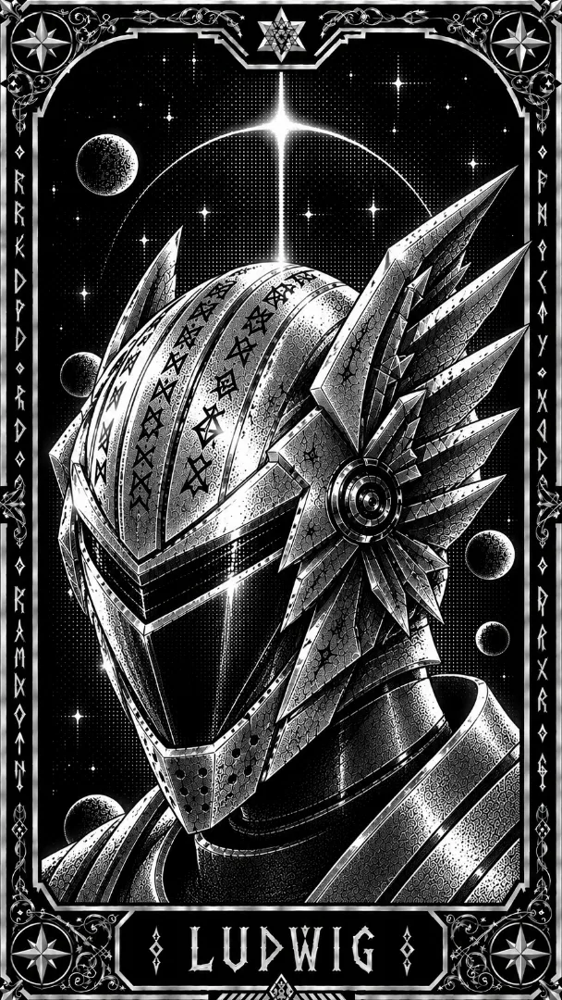
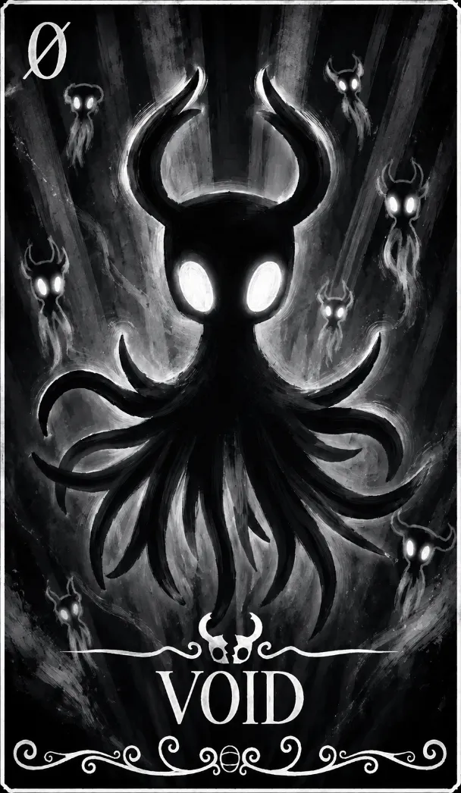
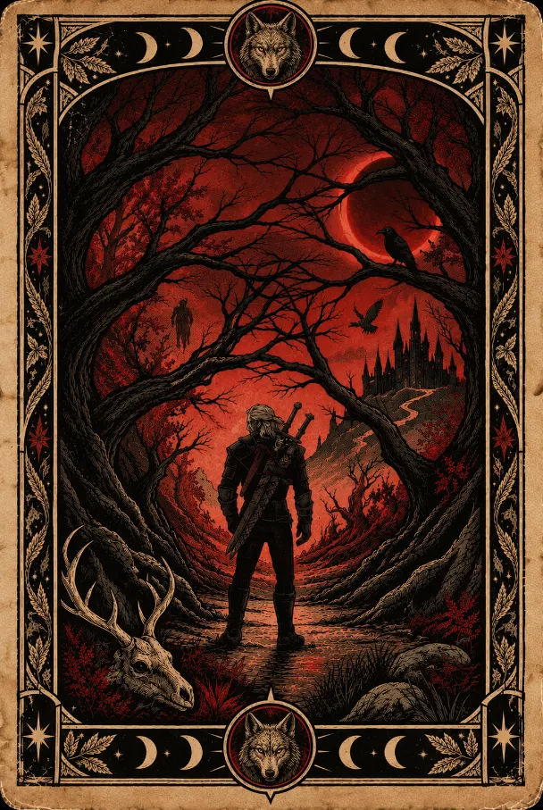
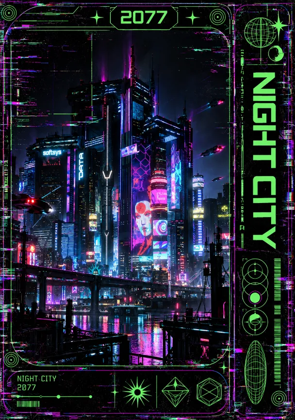
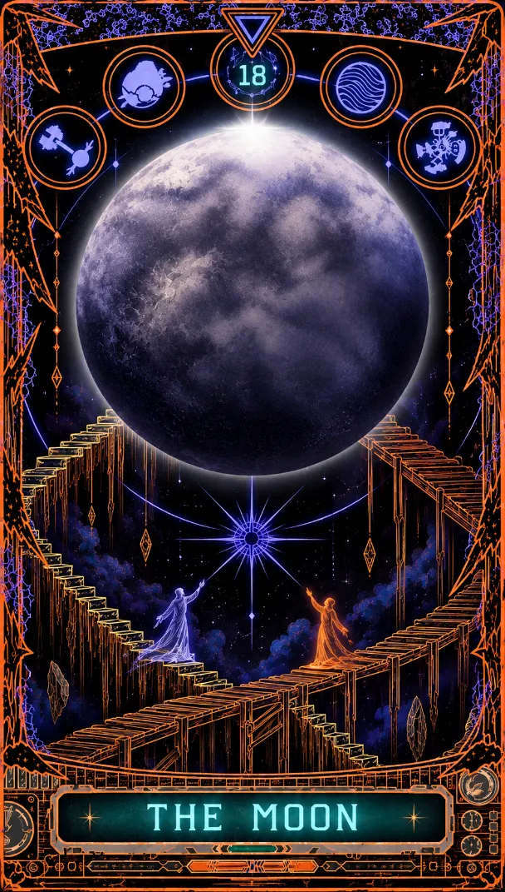
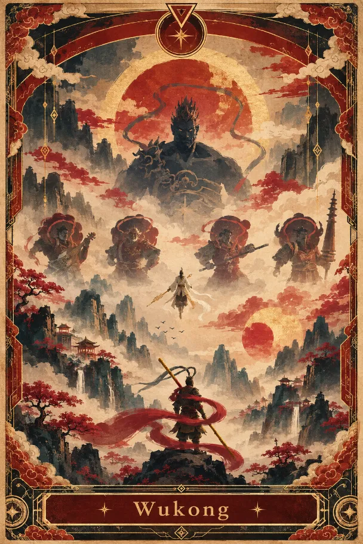
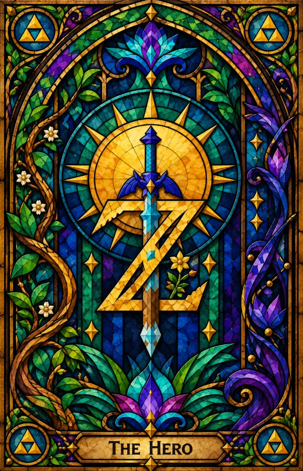
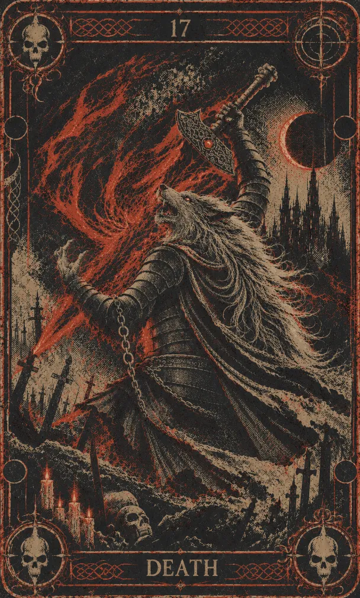

Anderswelt
Arrastra para girar · Elige un mundo

Soy Ludwig. Estoy aprendiendo a crear videojuegos y quiero estudiarlo en Alemania. Cada planeta es un mundo que me marcó: entra y descubre por qué.






